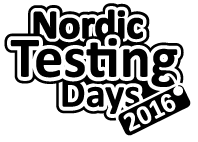

2 June 2016

Tallinn, Estonia
test automation
in three different ways
Joep Schuurkes
@j19sch
The value of
another's experience
is to give us hope,
not to tell us how
or whether to proceed.
- Peter Block
the first story
collaborate
the second story
just begin
the third story
learn
Just begin,
engage with people,
and you'll find yourself
with help soon enough.
thank you!
j19sch.github.io
testingcurve.wordpress.com
@j19sch